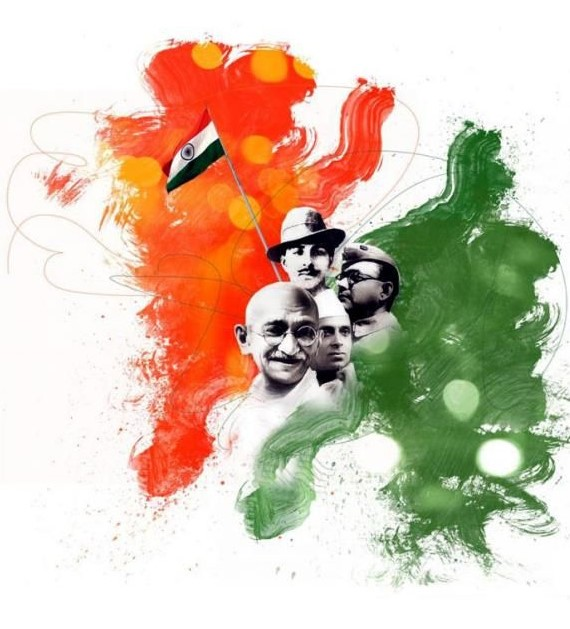

The Greatest Indian chose to focus on India as a modern nation: "India today is unrecognizable from the India that got independence in 1947. This nation has achieved this stature in the world thanks to contribution from millions of Indians. This is an effort to recognise one who has made the maximum contribution and impact in the surge of independent India".
Following are some of the great leaders and freedom fightersof India. To learn more about them click on the links below: